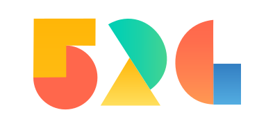
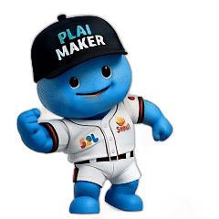

제1회 위드인천에너지 AI 도구 활용 공유회

오늘 발표 순서
AI 도구, 어떤 것들이 있나
v0, AI 코딩 도구, MISO
이런 것들을 만들 수 있다
PRD 작성, 프롬프트 수정법
앱에 AI 연결 & MISO
AI 연결, 자동화 흐름 만들기
만든 앱, 어디에 올리나
GitHub 배포, Supabase 저장
보안, 이것만 기억하세요
데이터 보안, 도구별 안전성
실습 — 게임 만들기
환경 설치 → 게임 → Supabase → 배포 → MISO
도구 소개
v0
말로 설명하면 앱을 만들어주는 AI
AI 코딩 도구
더 깊은 수정이 필요할 때
MISO
앱에 AI 자동화를 연결할 때
이런 것들을 만들 수 있다
AI와 함께라면 아이디어만 있으면 됩니다
📊 현황 대시보드
매출, 재고, KPI를 한눈에 보는 실시간 현황판
🔎 현장 점검 앱
체크리스트 입력 → 사진 첨부 → 결과 자동 리포트
📅 예약 / 신청 시스템
회의실, 차량, 교육 등 신청·승인을 웹으로 관리
🎮 게임 / 인터랙티브 콘텐츠
퀴즈, 미니게임, 교육용 시뮬레이션
🤖 AI 챗봇 / 상담 도우미
사내 규정 검색, 고객 문의 자동 응대
💡 떠오른 아이디어, 뭐든!
"이거 있으면 좋겠는데" 싶은 건 일단 만들어보세요
코딩을 몰라도 됩니다. "무엇을 만들고 싶은지"만 명확하면, "어떻게"는 AI가 해결합니다.
그러면, 어떻게 만드나?
AI에게 말로 설명하면 직접 만들어줍니다. 단, 처음 요청이 중요합니다.
📋 처음 설계가 핵심!
중간에 바꾸면 처음부터 다시 만드는 것과 같습니다
→ "여기 바꿔"
→ "저것도 추가"
→ 결국 처음부터 다시
2. 기능: 출퇴근 버튼, 월별 조회
3. 화면: 메인, 기록 목록
4. 저장: 브라우저 로컬
🎨 예시: v0에서 첫 요청
말로 설명하면 화면과 코드를 한 번에 만들어줍니다
v0 주소 : https://v0.app
PRD = 제품 요구사항 문서 — 무엇을, 왜, 어떻게 만들지 미리 정리한 문서 (이것도 AI에게 작성을 맡길 수 있습니다)
만든 다음에는, 이렇게 수정합니다
처음 만든 결과물을 다듬을 때도 구체적으로 말할수록 결과가 좋습니다.
| ❌ 나쁜 수정 요청 | ✅ 좋은 수정 요청 |
|---|---|
| "좀 바꿔줘" | "헤더 배경을 파란색으로, 글씨는 흰색으로 바꿔줘" |
| "에러 고쳐줘" | "버튼 누르면 화면이 안 바뀌어. 콘솔에 에러 메시지 복사해줄게" |
| "더 예쁘게" | "카드에 그림자 넣고, 카드 사이 간격 좀 넓혀줘" |
- 확인: "지금 결과물 괜찮아. 여기서 수정할게"
- 하나씩: "테이블에 날짜 컬럼 추가해줘"
- 확인 후 다음: "좋아! 이번엔 차트도 넣어줘"
- 마무리: "모바일에서도 잘 보이게 정리해줘"
더 복잡한 기능이 필요할 때 — 이건 다음 시간에..
VS Code에 AI 코딩 도구를 설치하면, 복잡한 기능도 AI와 함께 만들 수 있습니다.
v0 결과물 다운로드
v0에서 만든 코드를 내 PC에 저장
VS Code에서 열기
파일 → 폴더 열기로 프로젝트 열기
AI 코딩 도구 설치
확장 프로그램(Ctrl+Shift+X)에서 검색
AI와 함께 수정
말로 지시하면 코드를 직접 수정
내 PC의 파일을 직접 읽고, 수정하고, 실행
스스로 계획을 세우고 시행착오를 거쳐 완성
필요한 프로그램 설치부터 실행까지 자동 처리
한 단계 더 — 만든 앱에 AI를 연결
앱만으로도 충분히 유용하지만, 여기에 AI를 연결하면 한 단계 더 나아갑니다.
| 만든 앱 | AI 없이도 이만큼은 됩니다 | 여기에 AI를 연결하면? |
|---|---|---|
| 📊 현황 대시보드 | 수동으로 데이터 입력하고, 차트로 표시 | AI가 데이터 분석하여 이상 탐지·추세 예측까지 자동 |
| 🔎 현장 점검 앱 | 체크리스트 입력하고, 사진 첨부해서 제출 | AI가 사진 분석하고 불량·위험 자동 판별·리포트 생성 |
| 📅 예약 / 신청 시스템 | 신청서 올리고, 관리자가 수동 승인 | AI가 일정·조건 분석해서 자동 배정·승인 판단 |
AI 자동화 흐름 만들기
MISO의 플레이메이커 기능으로, AI 동작 흐름을 설명하면 AI가 만들어줍니다.
대화로 설명
원하는 흐름을 말로 설명하면
AI가 질문하며 함께 완성합니다
플레이메이커가 생성
AI가 자동화 흐름을
만들어줍니다
저장 → 발행
"저장하기" 클릭 후
"발행하기" 클릭
API 키 생성
"앱 공유하기"
→ "다른 서비스와 연결"
→ API 키 생성
→ 키와 URL 복사
내 앱에 연결
API 키와 URL을 앱에 넣으면 끝
연결은 AI에게 맡기면 됩니다
API란? — 서로 다른 프로그램끼리 데이터를 주고받는 통로. 내 앱에서 MISO에 데이터를 보내면, AI 결과를 돌려줍니다.
코드와 데이터, 어디에 저장하나?
v0로 만든 앱은 이 세 곳에서 동작합니다
| GitHub | Supabase | Vercel | |
|---|---|---|---|
| 역할 | 코드 저장소 | 데이터 저장소 | 배포 서비스 |
| 뭘 담나? | 앱의 소스 코드 화면, 기능, 디자인 |
앱이 쓰는 데이터 사용자 정보, 점수, 기록 |
완성된 앱을 웹에 공개 URL 생성, 접속 가능 |
AI 사용 시 이것만 기억하세요
AI 도구 사용 시 반드시 지켜야 할 사항
"이 고객 목록으로 앱 만들어줘" 하면서 실제 데이터를 넣으면 외부 서버로 전송됩니다
v0 설정 화면의 환경변수(Environment Variables)에 별도 등록하세요
Supabase는 외부 클라우드 — 사내 기밀 데이터는 MISO에서 처리하세요
"점수 기록 기능 추가해줘" 처럼 만들고 싶은 기능만 설명하면 됩니다
사내 데이터를 다룰 때, 어떤 도구가 안전할까?
소속 회사의 보안 정책에 따라 도구를 선택하고, 데이터를 안전하게 다루세요
| 도구 | 용도 | 데이터 저장 | 데이터 입력 |
|---|---|---|---|
| MISO 사내 AI 플랫폼 |
AI 자동화 · 업무 지원 질의응답, 문서 분석, 워크플로우 |
지식 저장소에 보관 가능 보안 데이터 업로드 허용 |
사내 문서 · 기밀 데이터 입력 가능 회사 차원 중앙 관리 · 접근 통제 |
| v0 AI 앱 빌더 (Vercel) |
앱 · 웹페이지 제작 비개발자도 쉽게 앱 생성 |
코드는 Vercel 클라우드에 저장 DB 필요 시 Supabase 자동 연결 사내 데이터 업로드 시 소속사 보안 규정 확인 |
전용 요금제 도입 입력 데이터 모델 학습에 미사용 · 통합 계정 관리 |
| AI 코딩 도구 (유료) Claude Code, Cursor 등 |
코드 개발 · 디버깅 개발자 전용, 고급 기능 |
코드는 내 PC에 저장 개인이 직접 관리 |
유료 플랜은 코드 학습에 미사용 개인 구독 기반으로 중앙 관리 어려움 |
| 외부 AI 웹서비스 (무료) ChatGPT 무료, Gemini 등 |
범용 질의응답 일반 정보 검색, 번역 등 |
입력 내용이 외부 서버에 전송·저장 브라우저에서 대화하면 서버에 기록이 남음 |
사내 데이터 입력 금지 AI 학습에 사용될 수 있음 · 관리 불가 |
🎮 재밌는 게임을 만들어 볼까?
AI와 함께라면 게임도 뚝딱 — 직접 만들고 바로 플레이해봅시다 (v0 위주)
Part 1: 환경 준비
GitHub, v0, Supabase 가입
Part 2: 게임 만들기
v0에 PRD를 넣어서 게임 만들기
Part 3: Supabase 저장
v0에서 Supabase 연결
점수 저장 + 랭킹 보드
Part 4: 서로 플레이!
v0에서 배포 → 주소 공유
Part 5: MISO AI 연결
플레이 기록을 MISO에 보내
AI 피드백 받기
환경 준비
설치 없이 웹 브라우저만 있으면 됩니다 — 가입만 하면 준비 끝!
Step 1: GitHub 가입
- github.com 접속
- "Sign up" → Google 계정으로 가입
- v0, Supabase 모두 GitHub 계정으로 로그인
Step 2: v0 접속
- v0.dev 접속
- GitHub 계정으로 로그인
- AI에게 말하면 앱을 만들어주는 도구
Step 3: Supabase 가입
- supabase.com 접속
- "Start your project" → GitHub 계정으로 가입
- 게임 기록 등 데이터 저장에 사용
🎮 웹 게임 만들기
Step 1: PRD 만들기
먼저 GPT나 Gemini에게 게임 기획서를 만들어달라고 요청
1984 스타일 세로 스크롤 비행기 슈팅 게임이야.
적기가 위에서 내려오고 총알로 쏴서 점수를 올리는 거야.
PRD를 마크다운으로 정리해서 작성해줘.
Step 2: PRD 확인 후 게임 만들기
PRD 확인 후 v0에게 게임 생성 요청
모든 UI는 한글로 만들어줘.
Step 3: 결과 확인 & 플레이
- v0가 게임을 자동 생성
- 미리보기에서 직접 플레이!
- 재미있게 작동하는지 확인
Step 4: 업그레이드 요청
점수 기록, 시도 횟수 표시 기능 추가해줘.
모든 UI는 한글로 만들어줘.
-- v0가 Supabase 연결 화면을 띄워줍니다
-- Free Plan 선택 → Continue 클릭!
💾 Supabase 확인 & 랭킹 보드
Part 2에서 v0가 Supabase를 자동 연결했습니다 — 이제 확인하고 랭킹을 만들어봅시다
Step 1: Supabase 대시보드 확인
v0가 자동 생성한 프로젝트와 테이블 확인
- supabase.com → 로그인
- 자동 생성된 프로젝트 확인
- Table Editor에서 테이블 확인
Step 2: 저장 테스트
게임을 플레이하고 데이터가 저장되는지 확인
- v0 미리보기에서 게임 플레이
- 이름 입력 → 점수 기록
- Supabase Table Editor에서
데이터가 들어왔는지 확인
Step 3: 랭킹 보드 만들기
랭킹 보드가 없다면 추가 요청
점수 높은 순으로 가져와서
랭킹 보드를 보여줘.
상위 10명까지 표시해줘.
모든 UI는 한글로 만들어줘.
🏆 서로 플레이!
만든 게임을 배포하고, 주소를 공유해서 같이 즐겨봅시다
Step 1: v0에서 배포하기
v0는 만든 앱을 바로 웹에 배포할 수 있습니다
- v0 우측 상단 Deploy 클릭
- 배포 완료! 주소가 자동 생성됩니다
내 게임 주소 예시
https://shooting-game-xxx.vercel.app
서로의 게임 플레이
배포 주소를 옆 사람에게 공유해서
게임을 플레이하고 점수를 남겨보세요
랭킹 확인
Supabase에 저장된 기록으로
누가 최고 점수인지 확인!
🤖 한 걸음 더 — MISO AI 연결하기
게임 플레이 데이터를 MISO에 보내서 AI 피드백을 받아보자
Step 1: MISO에서 흐름 만들기
miso.run → 새 흐름 생성 → 아래 프롬프트 설정 → 발행하기 → API Key, URL 복사
⚠️ MAX 토큰 넉넉하게 설정 / 발행하기 필수!
너는 슈팅 게임 "SKY FORCE 1984"의 AI 코치야.
플레이어의 게임 기록을 분석해서 피드백을 줘.
응답 규칙: 한국어, 존댓말, 이모지 사용, 300자 이내
응답 형식:
🎖️ 이번 비행 평가 (한 줄 총평)
✅ 잘한 점 (2~3개)
💡 다음 비행 팁 (2~3개)
🔥 도전 목표 (1개)
Step 2: v0에 한번에 붙여넣기
아래 내용을 통째로 복사해서 v0에 붙여넣기
붙여넣기 후 v0 Settings → Environment Variables에 MISO_API_KEY, MISO_API_URL 추가
게임 종료 시 MISO API로 보내서 AI 코치 피드백을 결과 화면에 보여줘.
모든 UI는 한글로 만들어줘.
MISO API 연결 참조:
- Endpoint: POST {MISO_API_URL}/chat
- Headers:
Authorization: Bearer {MISO_API_KEY}
Content-Type: application/json
- Body:
{
"inputs": {},
"query": "플레이 기록 텍스트",
"mode": "blocking",
"conversation_id": "",
"user": "player"
}
- 응답에서 data.answer가 AI 피드백 텍스트
환경 변수 (서버 사이드에서 사용):
- MISO_API_KEY=발행 후 복사한 키
- MISO_API_URL=https://api.holdings.miso.gs/ext/v1

수고하셨습니다.
다음 교육은 두 달 뒤에 만나요!
지속적으로 함께 성장하는 자리를 만들어가겠습니다.